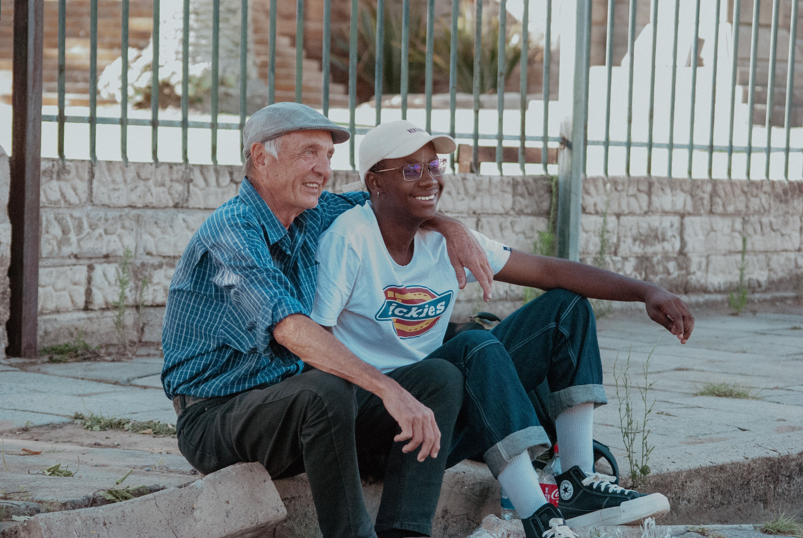

Animal Shelters
Help care for animals and support animal welfare organisations.
EnquireFind a community service opportunity that suits you.
Help care for animals and support animal welfare organisations.
Enquire
Participate in environmental clean-up and conservation projects.
Enquire
Support healthcare workers, patients and hospital programmes.
Enquire
Assist schools, learners and educators.
EnquireSupport library activities and reading programmes.
Enquire
Spend time supporting and caring for elderly community members.
Enquire